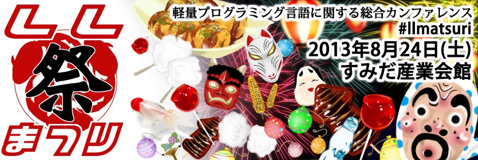

カテゴリ
開催案内
物販＆見本誌
アンケートのお願い
プログラム
タイムテーブル
チケット
会場ネットワーク
LL QUIZ 2013
アーカイブ
LL Blog
twitter.com/lljapan
facebook.com/lljapan
アーカイブ
当日の発表資料、写真、映像などを公開します。
発表資料
写真
過去のLL
Decade
2012
Planets
2011
Tiger
2010
Television
2009
Future
2008
Spirit
2007
Ring
2006
Day&Night
2005
Weekend
2004
Saturday
2003